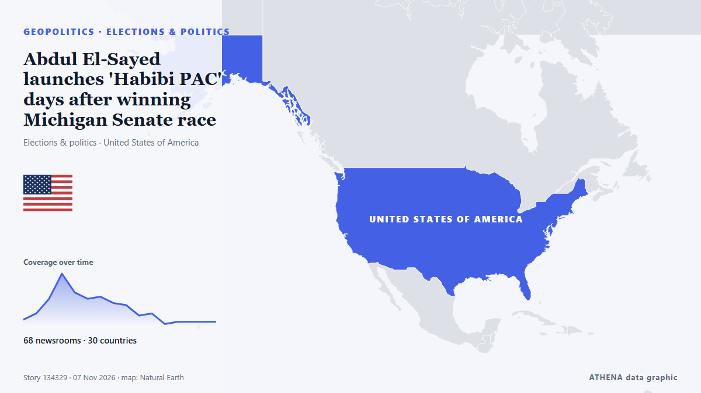

Elections & politics
SponsoredPresented by  Cybernetics and Artificial Intelligence Lab Welcome to the Cybernetics and Artificial Intelligence Laboratory, established at the Department of Business Administration of the National and Kapodistrian University of Athens. The lab is headed by Professor Dimitrios Thomakos. The lab aims to do research that can be published in top venues. Our research uses tools and methods of Artificial Intelligence, and lies in the following areas: - Forecasting - Decision making - Cyber security - Finance We are always looking forward to collaborating with exceptional students!
Cybernetics and Artificial Intelligence Lab Welcome to the Cybernetics and Artificial Intelligence Laboratory, established at the Department of Business Administration of the National and Kapodistrian University of Athens. The lab is headed by Professor Dimitrios Thomakos. The lab aims to do research that can be published in top venues. Our research uses tools and methods of Artificial Intelligence, and lies in the following areas: - Forecasting - Decision making - Cyber security - Finance We are always looking forward to collaborating with exceptional students!
| 26 Oct | 1 |
|---|---|
| 27 Oct | 0 |
| 28 Oct | 1 |
| 29 Oct | 1 |
| 30 Oct | 1 |
| 31 Oct | 1 |
| 1 Nov | 1 |
| 2 Nov | 1 |
| 3 Nov | 4 |
| 4 Nov | 6 |
| 5 Nov | 2 |
| 6 Nov | 1 |
| 7 Nov | 3 |
| 8 Nov | 0 |

Abdul El-Sayed launches 'Habibi PAC' days after winning Michigan Senate race
With New Hampshire and Georgia staying in Democratic hands, Republicans now look to Michigan for a pickup, where Democrat Abdul El-Sayed is competing with Republican Mike Rogers. from France 24 English
New Zealand election early count shows two main parties near deadlocked
Left-leaning parties, including Labour, are aiming to make the National Party coalition the first one-term government in nearly 50 years. from The Business Standard (Bangladesh) (working feed)
After JD Vance, now Trump Jr blames Iran war for US midterms defeat
Says war in Iran had weighed on Republican candidates, even as voters backed his handling of it. from Express Tribune
Colombian Firms Back Brazil Before Lula Win
Our experts unpack what Lula’s victory means for Brazil’s ties with Washington and how it could reshape a region trending right. from Atlantic Council
New Zealand Election Too Close to Call
New Zealand's election is too close to call, with National's bloc on 67 of 130 or 131 seats and the final result due on Friday, 27 November. from The Rio Times
French presidential hopeful Melenchon pledges minimum wage rise, retirement at 60
PARIS, Nov 7 - Jean-Luc Melenchon, the hard-left French presidential hopeful, will pledge to raise the minimum wage and restore the country's retirement age to 60 when he launches his 2027 election… from The Straits Times
Kazakhstan president proposes admitting Russia to Organization of Turkic States
Russia’s Digital Development Ministry has proposed cutting off cellular service to smartphones brought in from abroad starting in April 2027 if their owners fail to register them by IMEI number… from Meduza (English)
Keisha Bottoms makes history as first Black woman elected US governor
Democrat Keisha Lance Bottoms and Republican Rick Jackson are running to be Georgia’s next governor in a race that could reshape control of a crucial battleground state and even make some history… from The National Herald
Pope has voted in the midterms says Vatican
(ANSA) - ROME, 30 OTT - Pope Leo XIV has voted in the US midterm elections, the Vatican said Friday. from ANSA English
What Americans are saying about how they voted in the midterm elections
Pope Leo XIV, the Catholic Church's first US-born pontiff, has voted in the United States midterm elections, submitting his mail-in ballot in Chicago, the Vatican confirmed. from RTÉ News
US midterms: Trump confronts new role as a lame duck facing a hostile Congress
Trump said he would work with Democrats while clinging to his veto powers. from The Straits Times
Tankers hit in Hormuz as Iran keeps up pressure after US vote
At least five vessels have reported incidents since Sunday, while Vice President JD Vance blames the Iran war for Republican election losses and Qatar says Washington and Tehran are reviewing peace… from The Business Standard (Bangladesh) (working feed)
Iran's Rezaei: We handed Trump 'political defeat' in DC
Iran's National Security Council Secretary Mohsen Rezaei hailed on Wednesday the Republican defeat in the US midterm elections yesterday, proclaiming that "the Iranian nation handed [US President… from AzerNews
Trump under pressure on Iran war after Republicans' midterms defeat
US President Donald Trump concedes that the war he ordered on Iran was partly to blame for his Republican Party's sweeping midterms losses -- but even as he comes under pressure, analysts said… from Al-Monitor
Zelensky says hopes US election means more support for Ukraine
Ukraine's President Volodymyr Zelensky has said he hoped the Democrat triumph in the US midterm elections would boost support for Kyiv and help end the war with Russia. from Vanguard
Reuters identifies five US foreign policy areas that could shift after midterms
According to the report, democrats, who won control of both the Senate and the House of Representatives, intend to curb the Trump administration’s war and spending powers. from TASS (English)